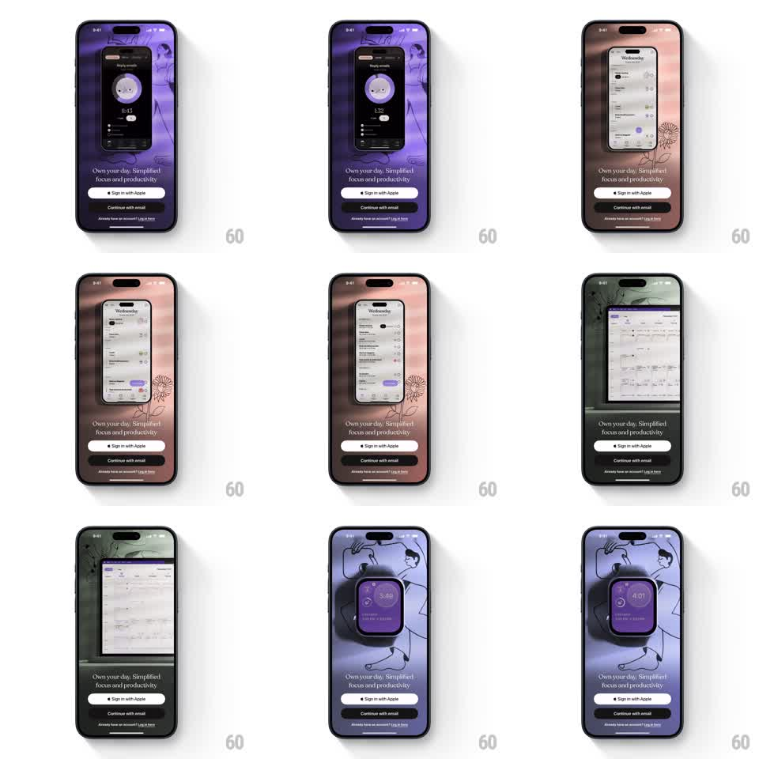

Media
Frame-by-frame

Rebuild this animation 1:1: Tiimo's welcome carousel - a looping showcase where the background color, illustration style, and device frame change together: phone, tablet, and watch each demoing a different feature above the fixed sign-in buttons.

Rebuild this animation 1:1: Tiimo's welcome carousel - a looping showcase where the background color, illustration style, and device frame change together: phone, tablet, and watch each demoing a different feature above the fixed sign-in buttons. ## Integration Integration: stack-agnostic spec - springs given as stiffness/damping, timed motions as duration + curve; map every value to your framework and animation library of choice. ## Scene Tiimo's sign-in screen: "Own your day. Simplified focus and productivity" with "Sign in with Apple" and "Continue with email" buttons pinned at the bottom. Above, a looping product showcase: a phone showing the focus timer on a purple illustrated background, then a phone with the day-planner list on a peach floral background, then a tablet with the week calendar on a dark green botanical background, then a smartwatch with the timer on a blue illustrated background. ## Motion spec Pattern: multi-device feature loop, ~3s per beat. - Each beat swaps three things at once: background color with its line-art illustration, the device frame, and the feature UI inside it. - The device scales in from slightly small (spring stiffness 300 damping 22) as the background color washes across (500ms, ease-out) and the illustration strokes fade in. - Feature UIs are alive: the timer counts, the planner list scrolls subtly. - The transition between beats slides the current device off while the next enters (350ms, ease-in-out), backgrounds crossfading underneath. - Copy and buttons stay fixed through the whole loop. ## Calibration - Each beat is a coherent scene: color, illustration, device, and feature belong together. - Devices are drawn realistically - notch, bezels, watch crown. ## Reduced motion Scenes crossfade without device motion. ## Don't miss - The background illustration is line art woven around the device, not a flat fill. - The loop cycles through all four scenes without a hard reset.